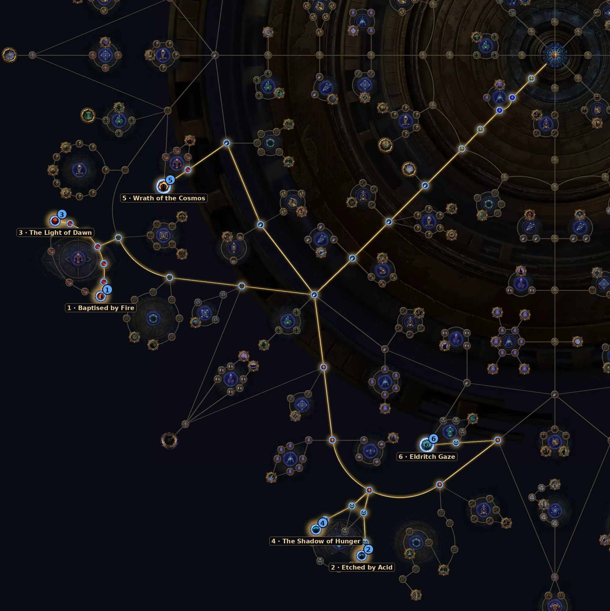

Searing Exarch e Eater of Worlds. Na 3.30 eles dão mais pontos de Atlas, seus altares dão Threads, e matá-los pode abrir Templar Vaults.
| Item | Como usar |
|---|---|
| Altares do Eater | Podem dar Breach, Legion, Blight, Ritual ou Incursion Threads. |
| Altares do Exarch | Podem dar Abyss, Expedition, Betrayal, Bestiary ou Ultimatum Threads. |
| Rarity | Os altares de rarity caíram para 10–20%, e os de quantidade sumiram. Prefira os de Threads. |
| Quadrantes | Mate os pinnacles em quadrantes diferentes para ter chance de Templar Vault em cada um. |
Árvore oficial da 3.30 (a GGG publicou antes da liga). Caminho a partir do centro: 28 pontos para os essenciais e +8 para os extras. A árvore tem 150 pontos no total. Some com a base de sustento (36 pontos).
| Nó | O que faz |
|---|---|
| 1 Baptised by Fire Essencial | 10% de chance de progresso em dobro para o Searing Exarch. |
| 2 Etched by Acid Essencial | 10% de chance de progresso em dobro para o Eater of Worlds. |
| 3 The Light of Dawn Essencial | 50% de chance de altar do Exarch quando a influência dele aparece. |
| 4 The Shadow of Hunger Essencial | +20% de chance de altares do Eater of Worlds. |
| 5 Wrath of the Cosmos Extra | Keystone: altares do Exarch com 50% de chance de 1 vantagem extra (mas desvantagens 100% mais fortes). |
| 6 Eldritch Gaze Extra | Keystone: altares do Eater com +50% no efeito das vantagens e 1 desvantagem extra. |
Abrir no site oficial (árvore do Atlas)
Nós de escolha (Thread, exército, líder etc.) aparecem marcados no link; escolha a opção indicada na tabela ao clicar neles.

Precisa de dano de boss e de defesa contra golpes grandes.
Do site: Earthshatter Berserker, Storm Burst Hierophant, Ballista Hierophant.
Ainda não há vídeo de farm desta mecânica na 3.30.
Ver vídeos da 3.30 no YouTube
Busca pronta pela 3.30. A árvore do Atlas saiu antes da liga; os vídeos de farm da 3.30 começam a aparecer a partir do lançamento (13/11).